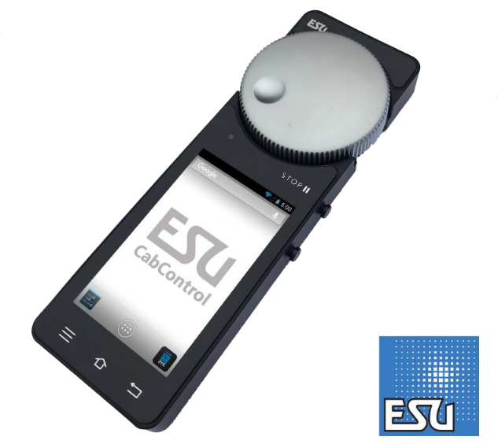
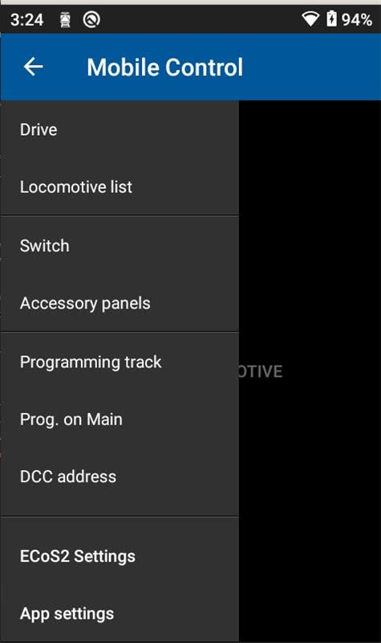
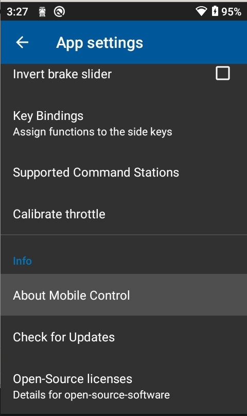
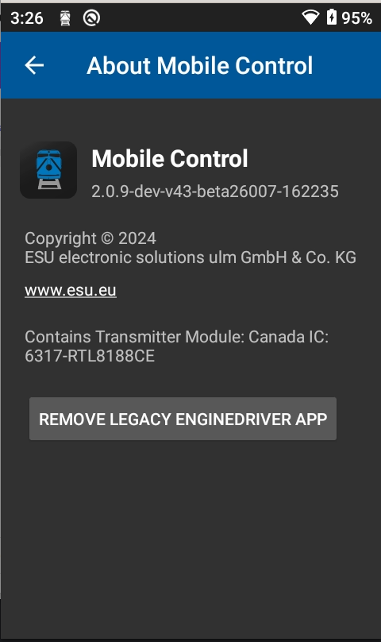

ESU Mobile Control 2/Pro
{kind=link}

As the ESU Mobile Control 2 and Mobile Control Pro are built on an Android platform, and they have made the API available to external developers, Engine Driver can run on it and make use of the hardware knob and buttons.
Note
Support for the ESU MobileControl 2 (MCII) was dropped in Version 2.42.222 as the MCII uses Android 4. Older versions of Engine Driver can still be downloaded from the Play Store & Downloads page if you have an MCII and want to use it with Engine Driver.
Download
See below for information on how to download Engine Driver onto the device.
ESU Mobile Control Pro
Early verions of the ESU Mobile Control Pro were shipped with a version of Engine Driver pre-installed that is not compatible with its hardware. It is also impossible to update the app on those device by simply downloading an APK from this site. We believe this was addressed in later releases.
If you have a device with the incompatible version of Engine Driver there are some instructions below on how to update the app on the device.
ESU Mobile Control 2
The ESU Mobile Control 2 does not have a Google Play Services installed, so you will not be able to use the Google Play Store to install Engine Driver. You will need to download the APK file and install it manually.
You will need to install a version prior to 2.42.222, as support for the ESU Mobile Control 2 was dropped in Version 2.42.222 as the MCII uses Android 4.
Operation
As well as being able to control speed of the selected throttle with the control knob, it’s also possible to switch direction via the zero-position end-stop switch.
Up to three trains can be controlled at once - the train being operated by the control knob is highlighted by the small ‘v’ in the speed indicator. Switch between operated trains by tapping the appropriate speed indicator. It is also possible to assign one of the device side buttons to switch to the next operated train - by default, the bottom-right button is assigned to this function.
When assigned to control a train, the Green LED is lit. When no trains are assigned, the Green LED flashes. In addition, you can use the Stop button to pause the currently operated train, or to stop all controlled trains. A short press of the Stop button (default, less than 1/2 second) pauses operation of the currently controlled train. The Red LED will flash quickly to denote this. On a second press of the Stop button, the currently operated train will resume at the previous set speed. A long press of the Stop button (default, greater than 1/2 second) will stop all controlled trains. The Red LED will flash slowly to denote this. On a second press of the Stop button, all controlled trains will remain stationary and it will be possible to again control the currently selected train.
Whilst in stop mode, the on-screen speed change buttons and bar are disabled for currently stopped throttles. Switching between controlled throttles is also disabled.
Configuration
Default configuration
It is possible to configure the device side buttons to perform various actions. The default assignment is as follows:
- Top-left
Increase speed
- Bottom-left
Decrease speed
- Top-right
Toggle direction
- Bottom-right
Select next throttle
These assignments can be modified via the ESU Mobile Control 2 Options page in Preferences.
Recommended Configuration
During the setup wizard for the ESU Mobile Control 2/Pro, it will ask if you wish to use the recommended settings for the ESU Mobile Control 2/Pro. If you select this option, it will set the following configuration:
- Throttle layout
Horizontal
- Number of Throttle
2
- Speed Sliders
Hidden
- Speed Buttons
Hidden
Other Configuration
You can also configure the physical slider on the ESU Mobile Control Pro to perform various actions.
- The Options are currently
none
3 Decoder Brake Levels
Screen Brightness
Use Semi-Realistic Throttle setting
If the 3 Decoder Brake Levels option is selected, the slider will control the brake level of the currently operated train, using the brake functions of the decoder. This functions exactly like the brake slide in the Semi-Realistic Throttle setting, but it will only work with decoders that support the brake functions.
See the Decoder Brake Type for more information on how the the Semi-Realistic Throttle settings work. This works exactly the same way, but for all throttle layouts, except the Semi-Realistic Throttle layout.
If the Use Semi-Realistic Throttle setting option is selected, the physical slider will follow whatever settings you have for the brake slider in the Semi-Realistic Throttle. It will work with any decoder, even if the decoder does not have brake functions.
Note
The setting for the Decoder Brake Functions for the physical slider and the Semi-Realistic Throttle setting are independent of each other.
Updating Engine Driver on the ESU Mobile Control Pro
The ESU Mobile Control Pro was initally shipped with a version of Engine Driver pre-installed that is not compatible with the MCpro hardware. It is also impossible to update the app on the device by simply downloading an APK from this site. (This should be fixed in the current production releases of the device.)
These instructions will allow you to update the app on the device from the Aurora Store or one of the APKs on this website.
Note that currently only the EngineDriver-2.40.203.apk, or later, is compatible with the ESU Mobile Control Pro. (Version 2.40.215 and later are available on the Google Play Store or the from the installed Aurora Store app.)
Instructions
Update the MC Pro App to the latest version (at least version 2.0.8) first.
In the MC Pro App
Connect to a server as normal, or select ‘Demo mode’ from the Overflow Menu (three dots) in the top-right corner.
Cick the Burger-Menu (the three bars, not the three dots)
Then “App Settings”
Then “Check for updates”
Run the MC Pro App,
Connect to a server as normal, or select ‘Demo mode’ from the Overflow Menu (three dots) in the top-right corner.
Tap the Burger-Menu (the three bars).
{kind=link}

Select the last entry “App settings”
{kind=link}

Select “About Mobile Control”
{kind=link}

Select “REMOVE LEGACY ENGINE DRIVER APP”
This will delete the old app from the device.
Reboot the MC Pro.
After a reboot, it will be gone.
You can then download the latest version using the Aurora Store that is installed on the the MC Pro (Search for “Engine Driver Throttle”)
OR You can download the latest Engine Driver .apk from the downloads page on this website using the Chrome browser on the MC Pro.
Alternate instructions
The following approach will work if the instructions above do not work for you, but should only be used as a last resort.
You need to download a copy of
adb.exe(e.g. https://developer.android.com/tools/releases/platform-tools )Then open a terminal (
cmdorpowershell) and navigate to the directory where adb.exe is located.For example, if you have
adb.exein theadbfolder on theC:drive, then you would type:cd C:\adb
Open an
adbconnection to the device. You will need to enable USB debugging on the device, and connect it to your computer via USB.Type:
adb shell
Then Enter these commands line by line:
$ mount -o remount,rw / $ rm -rf /system/app/EngineDriver/ $ rm -f /data/dalvik-cache/arm/*Engine* $ mount -o remount,ro / $ pm uninstall --user 0 jmri.enginedriver $ reboot (You can copy and paste these commands into the terminal window, but make sure you press ``Enter`` after each line.)
After the device has rebooted, you can install a new APK from this website.
Open the Chrome browser on the MC Pro
Navigate to the Engine Driver downloads page
click the .APK you wish to download